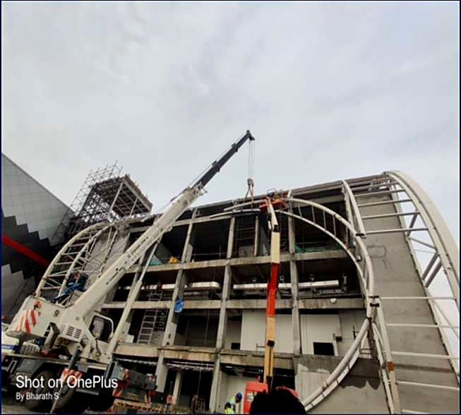

01 — The Challenge
A food-grade facility, on an airport-side footprint.
SATS Food Solutions needed a single-source partner to deliver an entire flight-catering campus at Kempegowda International Airport — civil substructure, PEB superstructure, food-grade interiors, electrical, fire-fighting, HVAC, plumbing, STP/WTP/ETP, IT, signage and landscape. The site was airside-adjacent with strict security and access protocols, and the delivery had to be sequenced around live airport operations.
The brief from SATS was simple: one GC, one schedule, one accountable team — and a 12-month window.
02 — Our Approach
End-to-end turnkey management.
SPC's General Manager — Projects led with a single integrated baseline schedule mapping every scope under one MS Project plan. Procurement was front-loaded for long-lead items (PEB, HVAC, glazing). A dedicated Site Incharge and Safety Incharge were stationed full-time, with weekly Lookahead and Mitigation reviews tracking RA bills against milestones.
We ran daily, weekly and monthly progress reports to the SATS PMC, with delay analysis built into every weekly cycle.
- Civil + structural: RCC substructure, slab-on-grade with food-grade epoxy
- PEB superstructure: Insulated panel system rated for cold storage
- MEPF: Electrical, Fire Fighting, HVAC, Plumbing — all in-house team coordinated
- Specialty: STP, WTP, ETP for food-grade water treatment
- Wraparound: Roads, signage, landscape and external development
03 — Construction Timeline
14 months from tender to handover.
04 — Photographs



05 — Result
Delivered in 14 months. Operational from day one.
The campus was handed over to SATS within the agreed schedule, fully commissioned and operational. SATS now runs flight-catering operations from this facility serving multiple international and domestic airlines at KIA. The project remains one of SPC's flagship turnkey deliveries — and led directly to repeat enquiries from the SATS group.
"Every detail was perfect, from the civil substructure to landscape works. Their team anticipated every need and the handover was flawless." SATS PMC team · post-handover review
Have a similar project?
Speak with our General Manager — Projects to scope a turnkey delivery.
Start a project